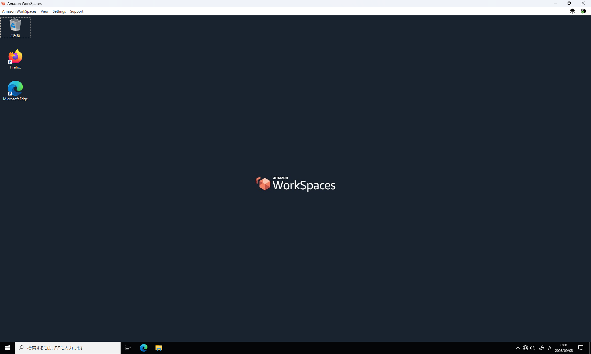
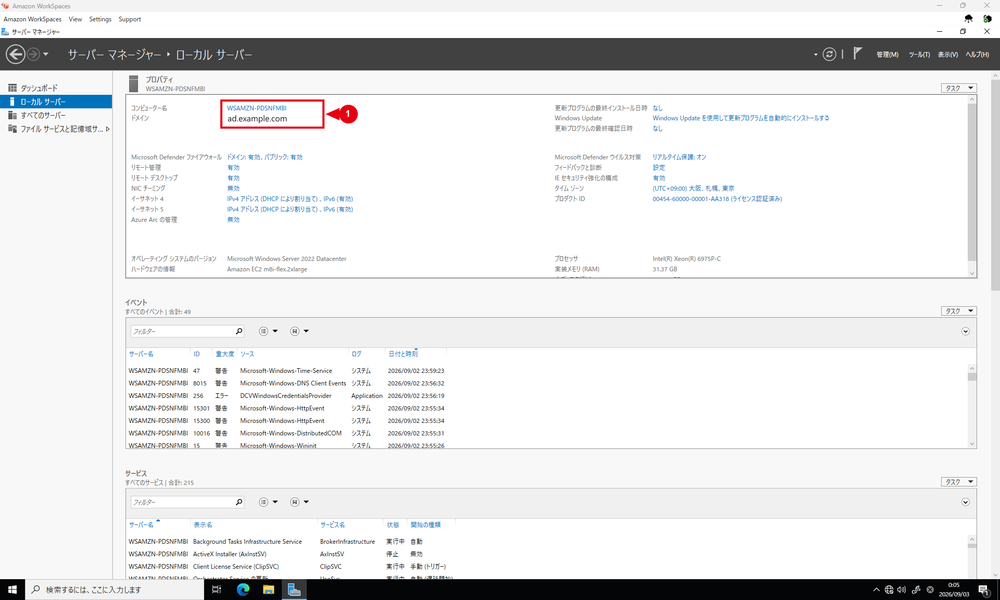
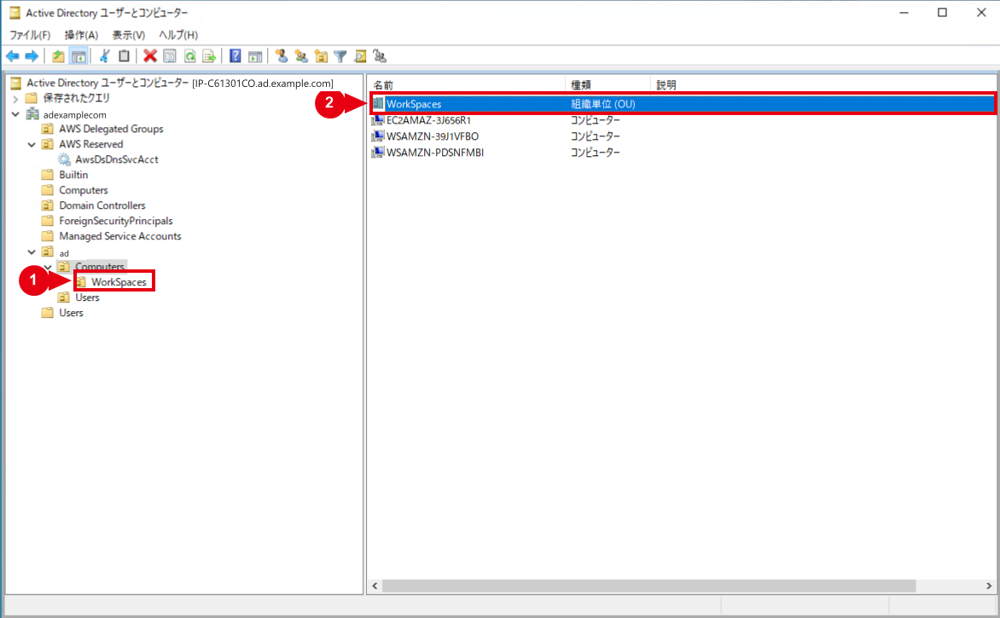
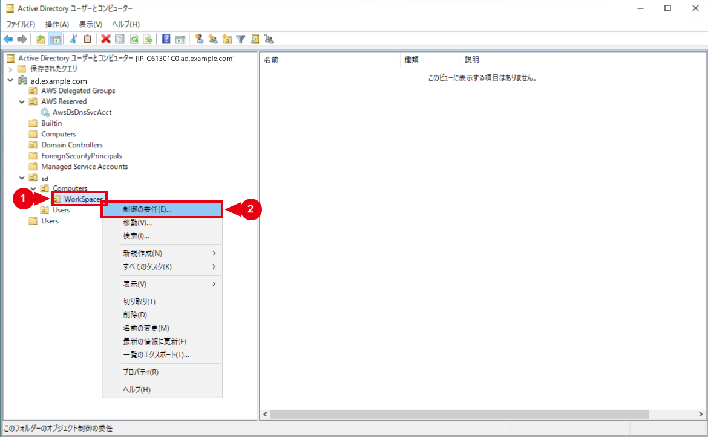
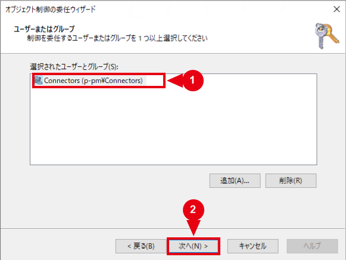
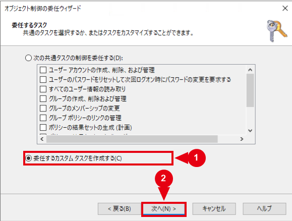
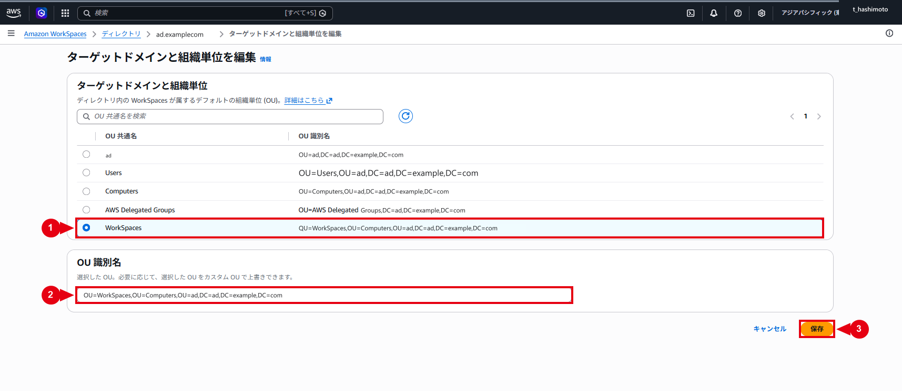
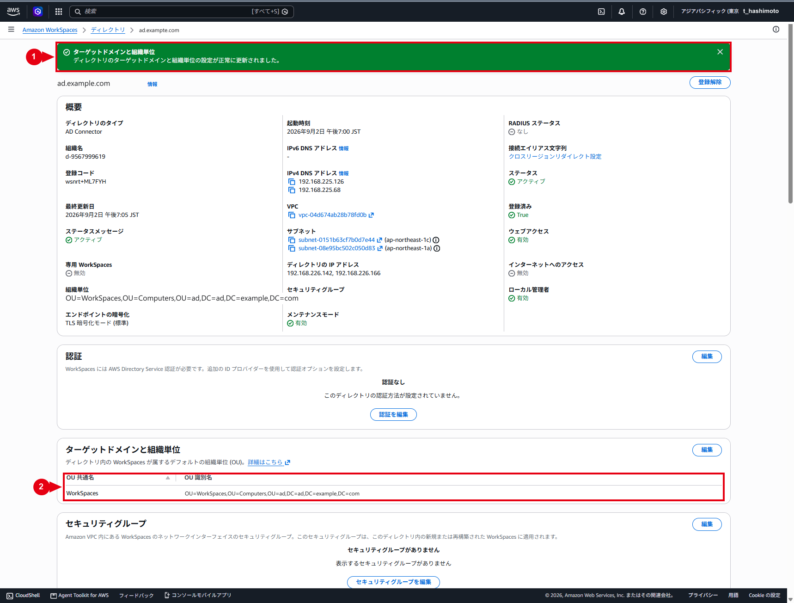

WorkSpaces用ターゲットOUの作成・権限委任
仕様
構成・動作
ad.example.com
└─ ad
├─ Computers
│ └─ WorkSpaces
└─ Users
├─ ADConnectorService
├─ Connectors
└─ WorkSpaces利用ユーザーADConnectorServiceとConnectorsの配置先はad\Usersです。権限を委任する場所は、WorkSpacesのコンピューターオブジェクトを作成するad\Computers\WorkSpacesです。アカウントの配置先と権限の委任先を混同しません。
ドメイン直下の組み込みComputersコンテナーと、お客様管理領域のad\Computers OUは別の場所です。ADUCで完全なパスを確認してから操作します。
⚠️ 注意：同じ権限委任を二重に登録しない
AD Connector用サービスアカウント作成・権限委任・運用手順でad\Computers\WorkSpacesへの委任を完了済みの場合は、詳細ACLを確認して本書の委任操作を省略します。同じConnectors、対象オブジェクト、権限および適用先のACEを重複して追加しません。
管理範囲
お客様管理OU配下を対象とし、ConnectorsへWorkSpacesコンピューターの管理に必要な権限を委任します。AWS管理領域の設定は変更しません。
制約事項
ターゲットOUは登録済みディレクトリごとに1つ指定します。変更後の新規作成・再構築に適用され、既存オブジェクトは自動移動されません。
構築作業
ℹ️ 情報：工程ごとに前提を確認する
OU作成と権限委任は、AD Connector作成前に管理用EC2から実施できます。④で同じOUとConnectorsへの委任を完了している場合は、設定内容を照合します。ターゲットOUの保存は、⑥でディレクトリを登録した後、新規WorkSpaceを作成する前に実施します。
1. 管理端末と既存WorkSpaceを確認する
管理用EC2または既存の管理用WorkSpaceへ接続します。初回構築でWorkSpaceがない場合は、ドメイン参加済みの管理用EC2を使用します。図1と図2は管理用WorkSpaceでの確認例です。

サーバーマネージャーの「ローカルサーバー」で、コンピューター名とドメイン名を確認します。

PowerShellで確認する場合は次を実行し、PartOfDomainがTrue、Domainが対象ドメインとなっていることを確認します。
Get-CimInstance Win32_ComputerSystem |
Select-Object Name, Domain, PartOfDomain作成済みWorkSpaceがある場合は、ターゲットOUの変更前に現在の所属OUを確認します。初回構築でWorkSpaceがない場合は、この確認を省略します。
Get-ADComputer -Identity '<WorkSpaceのコンピューター名>' -Properties DistinguishedName |
Format-List Name, DistinguishedName⚠️ 注意：ターゲットOU変更は既存WorkSpaceを移動しない
ターゲットOUの変更は、変更後に新規作成または再構築したWorkSpaceへ反映されます。既存WorkSpaceのコンピューターオブジェクトは自動移動されません。
2. WorkSpaces OUを作成する
同じDNのOUが存在する場合は、OUの配置先と誤削除防止を確認し、新規作成を省略します。
OUを新規作成する
- 対象ドメインの管理資格情報でADUCを開きます。
ad.example.com、ad、Computersの順に展開します。ad\Computersを右クリックし、「新規作成」から「組織単位」を選択します。

- 名前へ
WorkSpacesを入力します。 - 「コンテナーを誤って削除されないように保護する」を有効のままにします。
- 「OK」を選択します。

- 左ツリーと右ペインの両方で、
ad\Computers配下にWorkSpacesOUが表示されることを確認します。

OUのDNを確認する
$workSpacesOuDn = 'OU=WorkSpaces,OU=Computers,OU=ad,DC=ad,DC=example,DC=com'
Get-ADOrganizationalUnit -Identity $workSpacesOuDn -Properties ProtectedFromAccidentalDeletion |
Select-Object Name, DistinguishedName, ProtectedFromAccidentalDeletionNameがWorkSpaces、DistinguishedNameが承認済みDN、ProtectedFromAccidentalDeletionがTrueとなっていることを確認します。
3. Connectorsへの権限委任を確認・設定する
委任内容
| 項目 | 選択内容 |
|---|---|
| 委任先OU | ad\Computers\WorkSpaces |
| 委任対象 | Connectors |
| タスク | 委任するカスタムタスク |
| オブジェクト種類 | コンピューターオブジェクト |
| 作成・削除 | 選択したオブジェクトの作成、選択したオブジェクトの削除 |
| アクセス許可 | 読み取り、書き込み |
WorkSpaces専用OUにはユーザーを配置しないため、ユーザーオブジェクトの作成・削除・書き込み権限は追加しません。ユーザー検索に必要な既存の読み取り権限は維持し、WorkSpacesコンソールから対象ユーザーを検索できることを別途確認します。
委任ウィザードを実行する
- ADUCで
ad\Computers\WorkSpacesを右クリックし、「制御の委任」を選択します。

- ウィザードで「次へ」を選択し、「追加」から
Connectorsを指定します。 - 「名前の確認」で対象ドメインの
Connectorsへ解決されたことを確認し、「OK」、「次へ」の順に選択します。

- 「委任するカスタムタスクを作成する」を選択して「次へ」を選択します。

- 「フォルダー内の次のオブジェクトのみ」を選択します。
- 「コンピューター オブジェクト」と、選択したオブジェクトの作成・削除を選択して「次へ」を選択します。

- 表示カテゴリで「全般」を選び、「読み取り」と「書き込み」を選択します。
- 「次へ」を選択し、完了画面で委任内容を確認して「完了」を選択します。

⚠️ 注意：作成・削除と読み取り・書き込みを組み合わせる
図9の作成・削除と、図10の読み取り・書き込みを組み合わせて委任します。上部の「プロパティ固有」は表示カテゴリです。選択しただけでは権限は付与されません。
詳細ACLを確認する
- ADUCの「表示」から「拡張機能」を有効にします。
WorkSpacesOUの「プロパティ」、「セキュリティ」、「詳細設定」の順に開きます。Connectorsのアクセス許可エントリを確認します。- OU自体にコンピューターオブジェクトの作成・削除、子コンピューターオブジェクトに読み取り・書き込みがあることを確認します。
- 適用先が
WorkSpacesOUまたは子コンピューターオブジェクトへ限定され、フルコントロールや親OU全体への権限がないことを確認します。
ADConnectorServiceを直接ACLへ追加せず、Connectorsグループ経由で委任します。
PowerShellでACLを参照する場合の実行例です。出力のConnectorsに関するエントリと適用先を、上記の詳細設定画面と照合します。
dsacls "OU=WorkSpaces,OU=Computers,OU=ad,DC=ad,DC=example,DC=com"4. WorkSpacesのターゲットOUを設定する
WorkSpaces Personalでは、登録済みディレクトリごとにコンピューターアカウントのターゲットOUを1つ指定します。設定方法はWorkSpacesディレクトリの管理も参照してください。
- AWSマネジメントコンソールでAmazon WorkSpacesを開き、対象リージョンを確認します。
- 「ディレクトリ」から対象AD Connectorを選択します。
- Directory ID、ドメイン、VPCおよびサブネットを作業申請と照合します。
- 「ターゲットドメインと組織単位」で「編集」を選択します。
WorkSpacesを検索し、承認済みDNと一致するOUを選択します。- 候補に表示されない場合は、承認済みDNをカスタムOUとして入力します。
- 「保存」を選択します。

- 保存成功の通知と、保存後のOU共通名・OU識別名を確認します。

5. 新規WorkSpaceのOU所属を確認する
- Amazon WorkSpaces作成・バンドル設定手順に従い、未使用の検証用ドメインユーザーでWorkSpaceを1台新規作成します。
- 作成前にDirectory IDとターゲットOUを再確認します。
- WorkSpaceが
AVAILABLEになるまで待ちます。 - ADUCで
ad\Computers\WorkSpacesを開き、新しいコンピューターオブジェクトを確認します。 - PowerShellでもDNを確認します。
$workSpacesOu = 'OU=WorkSpaces,OU=Computers,OU=ad,DC=ad,DC=example,DC=com'
Get-ADComputer -SearchBase $workSpacesOu -Filter * -Properties DistinguishedName,whenCreated |
Select-Object Name,DistinguishedName,whenCreated対象1台だけを確認する場合は次を実行します。
Get-ADComputer -Identity '<WorkSpaceのコンピューター名>' -Properties DistinguishedName,whenCreated |
Format-List Name,DistinguishedName,whenCreatedDistinguishedNameが次の形式となっていることを確認します。
CN=<コンピューター名>,OU=WorkSpaces,OU=Computers,OU=ad,DC=ad,DC=example,DC=comコンピューターオブジェクトを後から手動移動して成功扱いにしません。新規作成時点から指定OUへ配置されたことを確認します。
運用作業
1. 設定を切り戻す
ターゲットOUを誤って設定した場合は、新規WorkSpaceの作成を停止し、WorkSpacesディレクトリのターゲットOUを変更前のDNへ戻します。誤ったOUにあるコンピューターオブジェクトは、対応するWorkSpaceを特定してから処置します。
既存WorkSpaceの再構築は単なる再起動ではありません。ルートボリュームがバンドルの最新イメージから再作成され、ユーザーボリュームも最新スナップショットから再作成されます。OU反映だけを目的に安易に実行せず、バックアップ、スナップショット時刻、KMSキー、利用者影響および承認を確認した別作業として実施します。